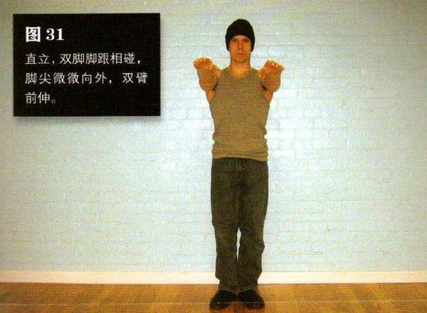
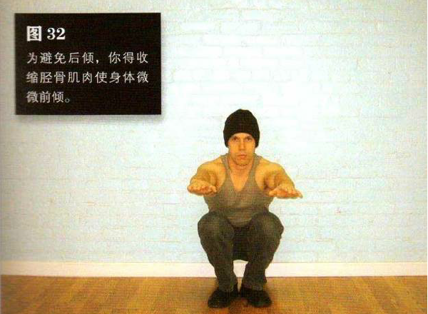

直立，双脚脚跟相碰，脚尖微微向外，双臂前伸。
弯曲膝盖和舰部，直到大腿后侧紧贴小腿，无法蹲得更低为止。此时，你的胸部应该紧贴大腿。注意，脚跟始终不要抬离地面。为避免后倾，你得收缩胫骨肌肉使身体微微前倾。保持这一姿势，然后仅靠腿部发力将自己推回到起始姿势。
很多训练者练习前几式时进展神速，但到了窄距深蹲就会碰到问题——在动作最低点或接近最低点时，身体有可能失去平衡而后倾。这些问题在腿骨长、个头高的训练者身上尤为突出。之所以会出现这些问题，是因为训练者胫骨前侧的肌肉缺乏力量以及平衡能力不强。
如果练习前几式时你的进度太快，那就回到标准深蹲，在练习过程中逐渐缩小双脚之间的距离——每次缩小几厘米。双臂前伸能够让重心前移。
初级标准：1 组，5 次
中级标准：2 组，各 10 次
高级标准：2 组，各 30 次